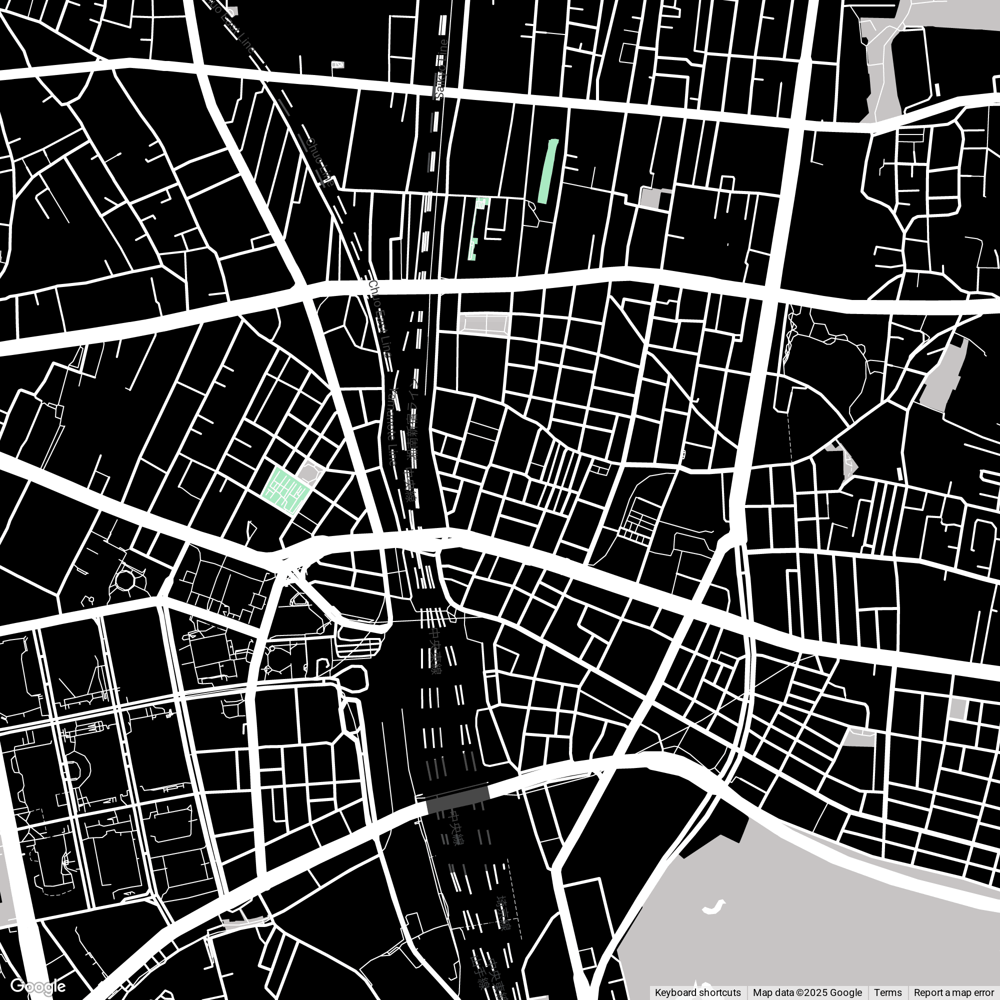

//////////////////
昼の顔、夜の顔。常に変化し続ける街、歌舞伎町。
この街の歴史、文化、そして隠れた魅力を、あなたの耳で巡りませんか？
test text
「古今歌舞伎町音声巡り」の３つの特徴
🗣️
深い物語
この街で生まれ、育まれてきた物語。歴史の証人たちの声に耳を傾けましょう。
🗺️
歩くガイド
街を歩きながら、その場に応じた音声ガイドが自動再生。あなただけの巡りを。
📲
手軽にスタート
アプリのダウンロード不要。Webブラウザからすぐに利用開始できます。
使い方
1
ガイドを開始
「ガイド開始」ボタンを押して、マップとスポット一覧を表示します。
2
スポットを選択
気になるスポットをマップか一覧から選びます。
3
音声を聞く
再生ボタンを押すと、その場所のストーリーが始まります。
画像セクション
最新ニュース
YYYY.MM.DD
TITLE_ZONE
MESSAGE
2025.10.18
新しいランドマークがオープン
エンターテイメント複合施設が中央通りに誕生。
2025.10.15
特集：昼の歌舞伎町探訪
当アプリ限定で隠れたカフェやお店をガイドに追加。
2025.10.11
ストリートアートが出現
有名アーティストによる壁画が話題に。
画像(お店の外の画像とか？)
マップ表示エリア
スポット一覧
ゴジラヘッド
新宿の空に現れた守り神
新宿ゴールデン街
昭和の香り残る飲み屋街
稲荷鬼王神社
鬼を祀る珍しい神社
東急歌舞伎町タワー
エンタメの新しい発信地